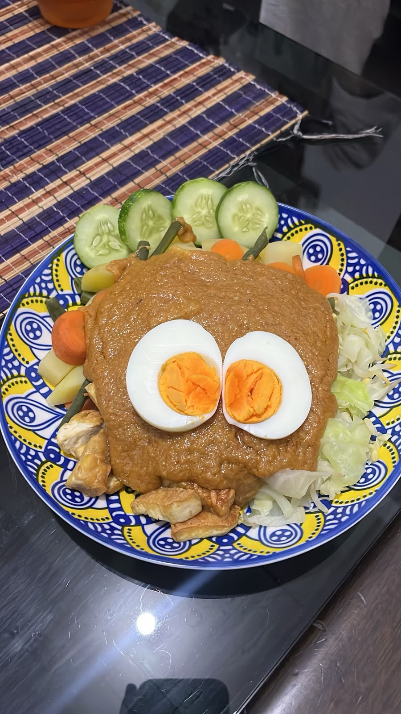

ABOUT THE FOOD

Gado-Gado Menggoda-Goda
Gado-gado is a traditional Indonesian dish consisting of various vegetables, potatoes, eggs, tempeh, and delicious peanut sauce.
Gado-gado is a traditional Indonesian dish that has been enjoyed for generations. The dish is made from a variety of vegetables, tofu, tempeh, potatoes, eggs, and other ingredients, served with a rich and flavorful peanut sauce.
The exact origin of gado-gado is not completely known, but it is strongly associated with Indonesian cuisine, especially in Java and Jakarta. Over time, gado-gado became popular throughout Indonesia because of its simple ingredients, delicious peanut sauce, and variety of textures.
Rp 15.000 - Rp 25.000
WHAT PEOPLE SAY
★★★★★
"..."